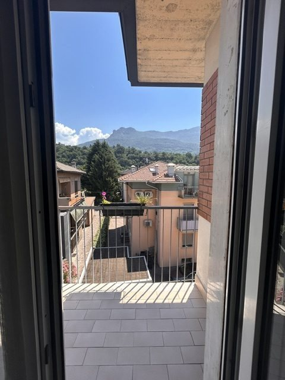

In venditaQuadrilocale in via Maranza
Trento, Bolghera
€ 330.000
- 87 m²
- 2 camere
- 1 bagno
- classe E
Luminoso, al terzo e ultimo piano di una tranquilla palazzina di sole 11 unità. Soggiorno con balcone, cucina separata, due camere matrimoniali, bagno finestrato rinnovato e cantina. Serramenti, porte interne e impianto elettrico già rifatti.
Chiedi informazioni